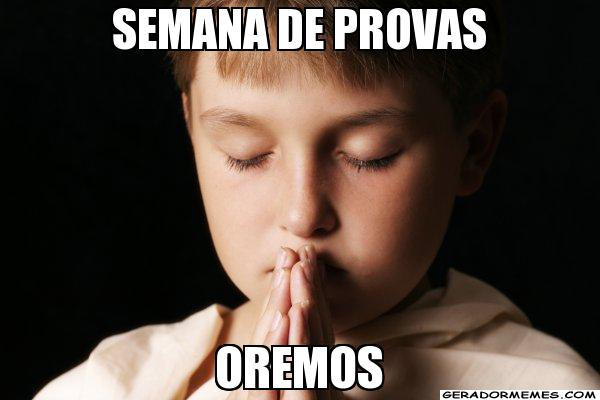

|
O processo seletivo consiste em redação (100 pontos) e prova estilo ENEM
(100 pontos), sendo 48 questões de múltipla escolha, que avaliam se o candidato é capaz de utilizar
corretamente a Língua Portuguesa; compreender fenômenos naturais e processos histórico-geográficos;
interpretar dados e informações para tomar decisões e enfrentar problemas e ainda, utilizar
informações e conhecimentos para construir argumentação consistente.
VESTIBULAR AGENDADO: Você marca o dia e horário e faz a prova de acordo com a sua
disponibilidade. saber mais... |
 |
Graduação (Bacharelado e Licenciatura): [ciências exatas] - Agronomia, Arquitetura e Urbanismo,
CST em Análise e Desenvolvimento de Sistemas, CST em Gestão da Produção Industrial, CST em Logística, CST em Marketing Digital,
CST em Processos Gerenciais, CST em Serviços Jurídicos e Notariais, Ciência da Computação, Ciências Contábeis, Ciências Econômicas,
Construção de Edifícios, Engenharia Ambiental, Engenharia Civil, Engenharia Elétrica, Engenharia Florestal, Engenharia Mecânica,
Engenharia Metalúrgica, Engenharia Química, Engenharia de Computação, Engenharia de Controle e Automação, Engenharia de Minas,
Engenharia de Petróleo, Engenharia de Produção, Manutenção Industrial e muito mais... lista completa... |
 |
A Monitoria é a modalidade de ensino-aprendizagem, dentro das necessidades de formação acadêmica,
destinada aos alunos regularmente matriculados. Objetiva despertar o interesse pela docência, mediante, o
desempenho de atividades ligadas ao ensino, possibilitando a experiência da vida acadêmica, por meio da
participação em diversas funções da organização e desenvolvimento das disciplinas dos cursos, além de
possibilitar a apropriação de habilidades em atividades didáticas.
quadro de horarios de monitoria... |
 |
De acordo com a Lei de Diretrizes e Bases da educação (LDB), de 1996, na educação básica,
que engloba a educação infantil, o ensino fundamental e o ensino médio, “o calendário escolar deverá adequar-se
às peculiaridades locais, inclusive climáticas e econômicas, a critério do respectivo
sistema de ensino, sem com isso reduzir o número de horas letivas previsto
nesta Lei.” Veja o nosso calendario... |
 |
Para ter acesso ao banco de questões, basta apenas clicar no link abaixo.
Teste Experimental: Você pode fazer um teste ou simulado experimental do Programa FGV Ensino Médio Digital.
Acesse o sistema e selecione a área de conhecimento que desejar. Ao final do teste ou simulado,
você terá acesso ao gabarito comentado de cada questão.
Após a realização do teste, cadastre-se e confira as vantagens de ser um usuário cadastrado.
Você poderá participar do Mural Virtual e do ranking, além de muitas outras vantagens. acessar banco de questões... |
|  |
Esteja você na escola ou na universidade, a semana de provas é uma realidade
presente na vida de qualquer estudante. Com isso, para que esse período, que acontece
no final de cada bimestre, não se torne um verdadeiro pesadelo, vale a pena entender
quais são táticas que irão garantir bons resultados!
Veja o dia de realização de cada prova... |